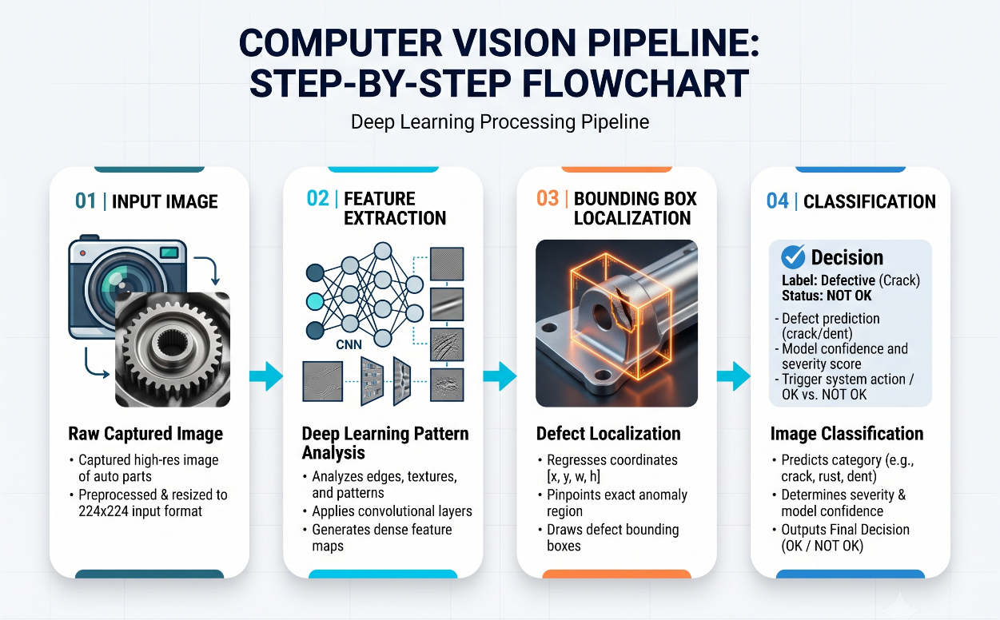

Section 06 • Computer Vision Pipeline
Analyzing visual data in real-time to pinpoint and classify minute manufacturing faults.
Step 01
Deep Learning Analysis
Utilizes advanced computer vision architectures to analyze part images in real-time.
Step 02
Localization & Classification
The system accurately identifies, draws bounding boxes around, and classifies various manufacturing faults.
Step 03
Pattern Recognition
Unlike rigid rule-based systems, this AI-driven approach learns intricate defect patterns from large datasets seamlessly.

08